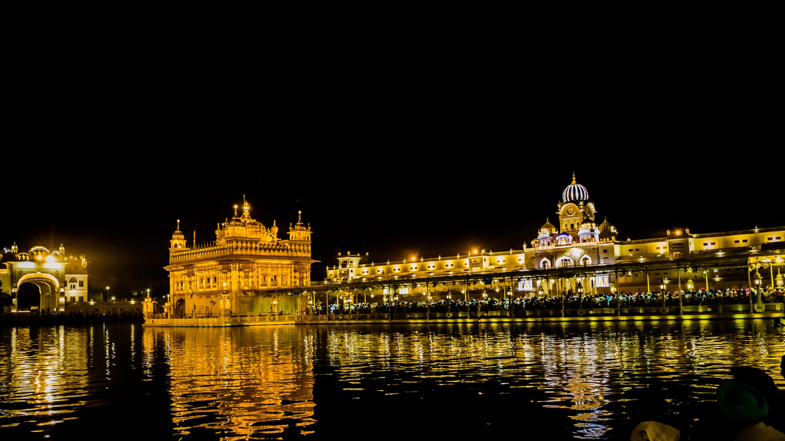

2 / 6
Delhi, Punjab, Himachal Pradesh, Chandigarh, Uttar Pradesh, Jammu and Kashmir, Haryana and Uttarakhad are the states in North India.
3 / 6
As a matter of fact, Mt. Everest is not in India. It is in Nepal, a different country.
4 / 6
North Indian cuisine is not just for sweets, but a lot of spicy foods like Chaat, Chole Bhature, Paranthe and so on.
5 / 6

The whole northern part of India does not speak Hindi. There are a lot of languages like Dogri, Haryanavi, Punjabi and so on.
6 / 6
One of the greenest cities in the world is in North India and yet it is called as concrete jungle. It is New Delhi.
❮
❯
1 / 6

EAST INDIA
2 / 6
Odisha, West Bengal, Bihar, Jharkhand are the states of East India while Arunachal Pradesh, Assam, Meghalaya, Nagaland, Manipur, Mizoram and Tripura are referred to as North-Eastern India.
3 / 6
Almost 70% of Northeast India’s terrains are covered by hills such as Garo Hills, Khasi Hills, The Purvanchal and so on and Mizoram’s Pukzing Cave is believed to be carved by a hairpin.
4 / 6
East India is a haven for music lovers. Many music festivals like Ziro festival in Arunachal Pradesh take place annually in this region.
5 / 6
East India has more than 150 tribes and each of these tribes prepare their unique tribal liquor. These are distinct in taste and visiting the location is the only way to taste it.
6 / 6
Arunachal Pradesh, the easternmost state witnesses the first ray of sun in India and is therfeore known as Land of Rising Sun.
World’s wettest place is in Meghalaya
❮
❯
2 / 6
Western India comprises of Diu & Daman, Gujarat, Maharashtra, Rajasthan, Goa, Dadra and Nagar Haveli.Some major cities that make it an important region are Mumbai, Panjim, Pune, Ahmedabad, Nashik and Khajuraho.
3 / 6
Western India houses a variety of flora and fauna as it is home to the largest desert in India, the Thar Desert and the coastal regions.
4 / 6

The signature Palace on Wheels train operating in Rajasthan, is one of the world’s most luxurious trains.
5 / 6
Maharashtra has the largest road network in India and Raan of Kutch is the largest salt marsh located in the Thar Desert Gujarat's Kutch District.
6 / 6
The second-highest waterfalls, Dudhsagar Waterfall is located in Goa while Daman and Diu are known for their scenic beaches.
❮
❯
1 / 6

SOUTH INDIA
2 / 6
South India includes Andhra Pradesh, Karnataka, Kerala, Lakshadweep, Puducherry, Tamil Nadu and Telangana
3 / 6

Out of 36 UNESCO World Heritage Sites in India, South India gets to brag about having nine of them. The most famous are the two temple sites at Tamil Nadu, the Chola temples and the Monuments at Mahabalipuram.
4 / 6
The earliest literature of South India was an ancient Tamil script called Sangams, and thanks to many monuments and archives lasting through the ages, modern South Indian writers are able to pull on the ancient material and have won many translation awards because of it.
5 / 6
Sometimes even elephants need some R&R and at Punnathoor Cotta Elephant Yard Rejuvenation Centre in Kerala, the big grey beauties can get massages, baths and a feed. The sanctuary aims to promote responsible interactions with elephants while protecting them.
6 / 6
Next time you’re sipping on some coconut water, give a toast to Southern Indian. 3/4 of all coconuts come from the South compared to only Maharashtra, West Bengal and Odisha producing coconuts in the North.
❮
❯
2 / 6
Central India includes the states of Madhya Pradesh and Chattisgarh
3 / 6
Being one of the four places in India where Kumbh Mela is hosted, Ujjain is often referred to as the “City of Temples”, as it houses some of India’s most popular temples.
4 / 6
The book, "Jungle Book" by Rudyard Kipling Drew was inspired from the forests of the Kanha National Park in Madhya Pradesh
5 / 6

Chattisgarh accounts for 15% of the total steel produced in india. Motorcycle Ambulance are being used to save lives of people living in remote areas.
6 / 6

Jal-Jali, Manipat in Chattisgarh is a unique place as anyone who jumps here can create an earthquake and the route from where Lord Ram passed during his exile period extends from Ratnapur to Ramoram.
❮
❯